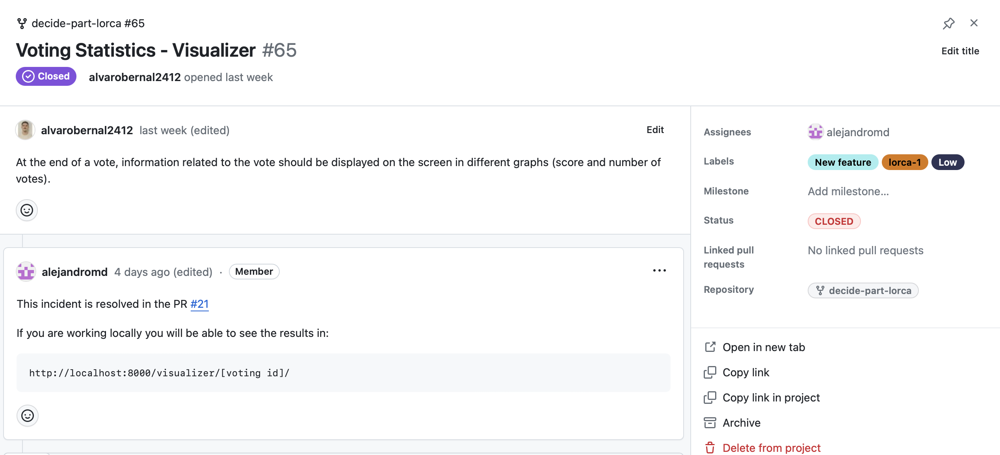
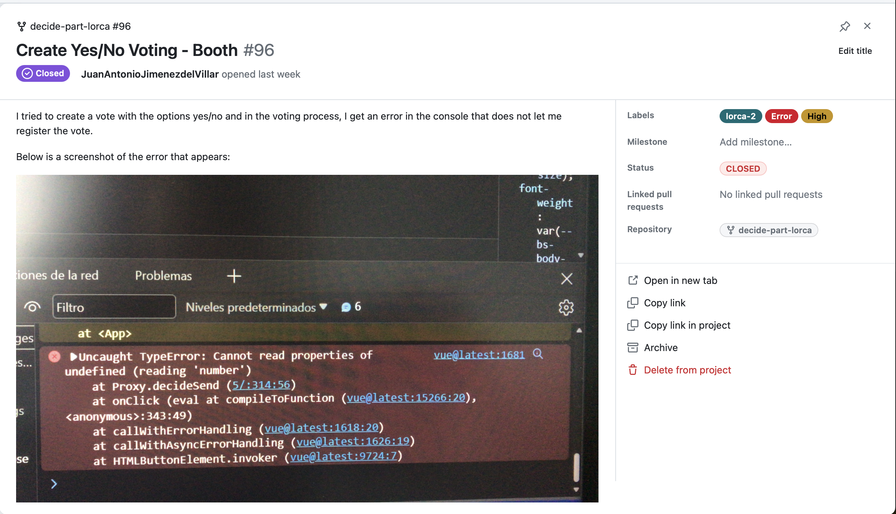
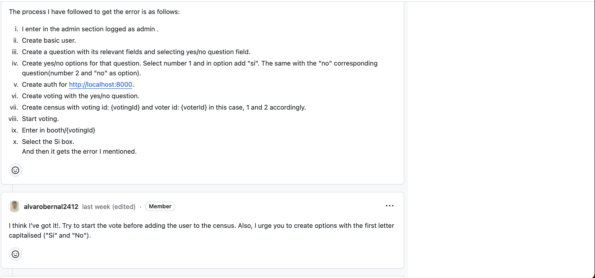
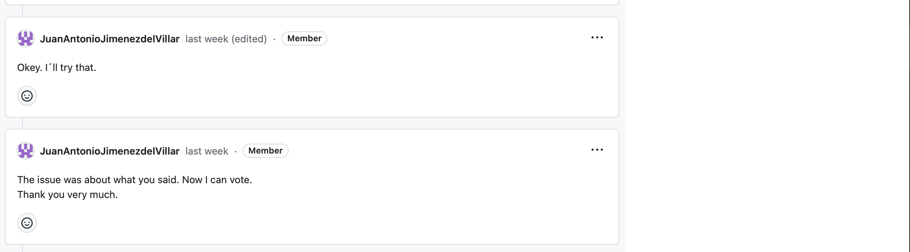
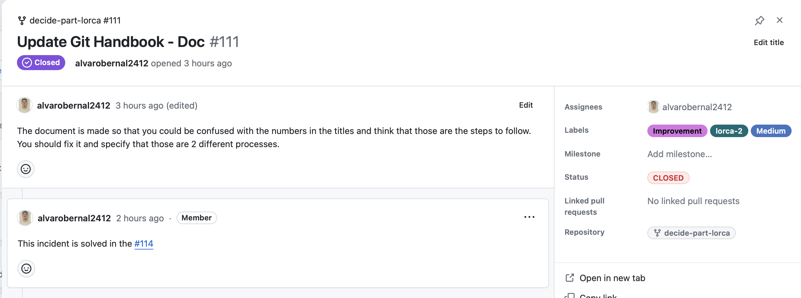

Proceso de Gestión de Incidencias#
¿Qué es una incidencia?#
Una incidencia es un problema que se ha detectado, relacionado con el software o la documentación del proyecto. En nuestro caso, una incidencia también suponen tareas de implementación de nueva funcionalidad y mejoras en el repositorio (ya sean de documentación, github actions, etc)
¿Qué es el Registro de Incidencias?#
El Registro de Incidencias es un Project Board de GitHub nombrado Incidents, en el que se registran todas las incidencias detectadas. Cada incidencia se representa como una tarjeta del tablero. El idioma empleado en el Registro de Incidencias es el inglés.
¿Qué hacer cuando se detecta una incidencia?#
Cuando se detecta una incidencia, se debe seguir el siguiente proceso:
Se crea una Issue en el Registro de Incidencias, dentro de la columna OPEN, indicando el nombre de la incidencia y el módulo al que hace referencia, separado por un guión. Por ejemplo: Import/Export Census - Census. Si la incidencia está relacionada con la documentación, en lugar de un módulo, se indica Doc. Por ejemplo: Change documentation - Doc. Si la incidencia está relacionada con la configuración, en lugar de un módulo, se indica Conf. Por ejemplo: Change GitHub Actions - Conf.
Se asigna una Label a la Issue indicando el tipo de incidencia (Error, Improvement o New feature).
Se realiza una descripción detallada de la Issue según el tipo de incidencia:
Error: se indica cómo reproducir el error y se describe el comportamiento esperado. Si es necesario, se describe el entorno en el que se ha detectado el error.
Improvement: se describe el estado actual de la funcionalidad y cómo se debería mejorar.
New feature: se describe la nueva funcionalidad que se propone acotando el alcance de la misma.
Se asigna la Issue a una persona que será la encargada de revisarla y resolverla.
Se asigna una Label a la Issue indicando el grupo al que pertenece la persona responsable de revisarla y resolverla (lorca-1 o lorca-2).
Se asigna una Label a la Issue indicando la prioridad de la incidencia (High, Medium o Low).
¿Cómo se resuelven las incidencias?#
Para resolver una incidencia, se debe seguir el siguiente proceso:
Si es necesario, se crea una rama del repositorio para trabajar en la resolución de la incidencia, dependiendo del tipo de incidencia:
Error: se crea una rama del estilo fix/titulo-descriptivo a partir de la rama sobre la que se ha detectado el error. Excepcionalmente, si el error se ha detectado en la rama main, se crea una rama del estilo hotfix/titulo-descriptivo a partir de la rama main.
Improvement: se crea una rama del estilo fix/titulo-descriptivo a partir de la rama sobre la que se ha detectado la mejora.
New feature: si es una nueva funcionalidad que requiere la modificación de varios módulos, se crea una rama del estilo epic/id_issue-titulo-descriptivo a partir de la rama develop. Si es una nueva funcionalidad que requiere la modificación de un único módulo, se crea una rama del estilo feature/id_issue-titulo-descriptivo a partir de la rama épica correspondiente o de la rama develop si no existe una rama épica asociada.
Excepcionalmente, si la incidencia está relacionada con la documentación, se crea una rama del estilo doc/titulo-descriptivo a partir de la rama develop. Si la incidencia está relacionada con la configuración, se crea una rama del estilo conf/titulo-descriptivo a partir de la rama develop.
Se realiza la modificación que resuelve la incidencia.
Nota: para más información sobre el estilo de las ramas, consultar la sección Estrategia de ramificación del documento Gestión de Repositorio.
¿Qué hacer cuando se resuelve una incidencia?#
Cuando se resuelve una o varias incidencias, se debe seguir el siguiente proceso:
Crear una Pull Request hacia la rama develop del repositorio, en la que se incluya la modificación que resuelve la incidencia. Es importante que la Issue esté referenciada en la descripción o comentarios de la Pull Request. Por ejemplo: Fixes #1.
Una vez que la Pull Request ha sido aprobada y fusionada, se mueve la Issue a la columna CLOSED del Registro de Incidencias. Es importante que la Pull Request esté referenciada en la descripción o comentarios de la Issue. Por ejemplo: Solved in #1.
Se cierra la Issue.
¿Qué hacer cuando se descarta una incidencia?#
Cuando se descarta una incidencia, se debe seguir el siguiente proceso:
Se realiza un comentario en la Issue indicando el motivo por el que se descarta.
Se mueve la Issue a la columna CLOSED del Registro de Incidencias.
Se cierra la Issue como no planeada.
Algunos ejemplos#
Incidencia de nueva funcionalidad#

Incidencia de error#
  
Incidencia de mejora#
